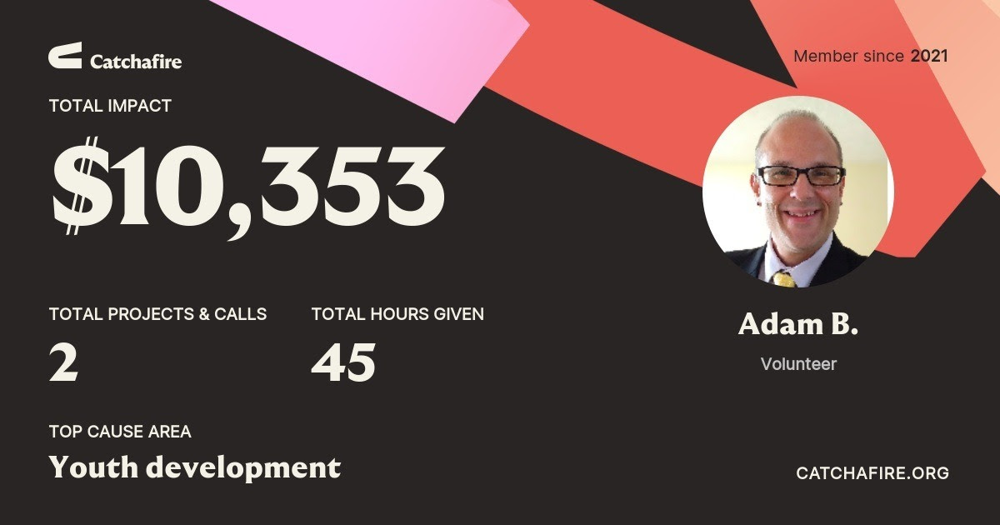

Adam G Bennett
Tucson, AZ


Languages
- JavaScript (ES6+)
- TypeScript
- HTML5
- CSS3
- SQL/NoSQL
- GDScript
Front-End Development
- React
- Vite
- TypeScript
- Responsive Web Design
- REST API Integration
- State Management
- TanStack Query
- React Hook Form
- Zod Validation
- React Router
- Component-Based Architecture
Back-End Development
- Node.js
- Express.js
- REST API Design
- Authentication & Authorization (JWT)
- Role-Based Access Control (RBAC)
- Input Validation & Sanitization
- Middleware Architecture
Databases
- MongoDB Atlas
- PostgreSQL
- Prisma ORM
- Amazon DocumentDB
- Weaviate Vector Database
AI & Machine Learning
- OpenAI API Integration
- Retrieval-Augmented Generation (RAG)
- Vector Search
- Conversational Memory Systems
- AI Workflow Orchestration
- Prompt Engineering
- Semantic Search
- Embeddable AI Applications
Cloud & DevOps
- AWS EC2
- Elastic Load Balancer (ELB)
- Amazon S3
- CloudFront
- Docker
Payments & SaaS
- Stripe Connect
- Marketplace Payment Systems
- Multi-Tenant SaaS Design
- Subscription & Commission Models
CMS & Website Development
- WordPress
- WooCommerce
- Elementor
- Astra
- Wix
Security
- JWT Authentication
- Helmet
- CORS
- DOMPurify
- Password Hashing
- Secure API Design
- Environment Configuration
Testing & Quality
- Vitest
- ESLint
- Prettier
- TypeScript Type Safety
- API Testing (Postman)
Game Development
- Godot 4
- Blender
- Gameplay Programming
- A* Pathfinding
- AI Behavior Systems
- Turn-Based Combat Systems
- UI Programming
- 3D Asset Integration
Software Architecture
- Full-Stack Application Design
- RESTful Services
- Offline-First Architecture
- Conflict Resolution & Synchronization
- Production Deployment
- System Design
- Technical Documentation
Hi, I'm Adam!
I love building tools to automate processes that help your business run more efficiently.
I'm a Full-stack Software Engineer with over a decade of experience designing, developing, and deploying modern web applications, AI platforms, and cloud-based software solutions.
Experienced across the entire development lifecycle, from architecting scalable back-end APIs and databases to building responsive React front ends, integrating AI and payment systems, and deploying production applications on AWS with Docker.
Skilled in JavaScript, TypeScript, Node.js, React, Express, PostgreSQL, MongoDB, AWS, and modern software architecture, with hands-on experience in AI orchestration, Retrieval-Augmented Generation (RAG), vector databases, authentication, and enterprise application design.
Passionate about solving complex technical problems, learning new technologies, and building software that is secure, maintainable, and delivers meaningful value to users.
Work History
Silver Agent – AI Sales & Customer Engagement Platform
Role: Founder/Owner/Fullstack Developer
Time-Frame: August 2025 to May 2026
Description:
Silver Agent is a production-focused AI platform designed to automate customer engagement for highly regulated industries, beginning with Medicare insurance agencies. The project demonstrates the design and implementation of a secure, scalable AI application that combines large language models with deterministic business workflows, memory systems, cloud infrastructure, and modern web technologies. Rather than acting as a general-purpose chatbot, Silver Agent functions as a conversational sales assistant capable of qualifying prospects, collecting required information, enforcing compliance rules, scheduling appointments, and seamlessly handing qualified leads to licensed agents.
Key Features:
- AI-driven conversational assistant with deterministic workflow orchestration
- Multi-turn conversational memory using vector embeddings
- Secure document ingestion and semantic retrieval
- Guided lead qualification and appointment scheduling
- Electronic Scope of Appointment (SOA) collection
- Compliance-aware conversation guardrails for Medicare regulations
- Domain-restricted website widget with secure public key authentication
- Analytics and conversation logging
- Production deployment on AWS
Technical Highlights:
Front-end:
- React
- Javascript
- Vite
- Embeddable website widget
- Responsive UI
Back-end:
- Node.js
- Express.js
- Docker
- JWT Authentication
- REST APIs
- Multi-stage AI orchestration
AI Architecture:
- OpenAI language models
- Weaviate vector database
- 8-turn representative short-term memory
- Retrieval-Augmented Generation (RAG)
- Prompt Engineering
Cloud Infrastructure:
- AWS EC2
- Docker deployment
- Application Load Balancer
- Amazon S3
- CloudFront CDN
- Amazon DocumentDB
Engineering Challenges Solved:
- Built persistent conversational memory while controlling context window growth through automatic conversation summarization.
- Implemented secure widget embedding that restricts usage to authorized customer domains.
- Designed business-rule guardrails to ensure conversations remain compliant with Medicare marketing requirements.
- Developed a scalable cloud deployment architecture capable of serving multiple client websites from a single backend platform.
- Integrated vector search with structured business workflows, allowing the assistant to answer knowledge-based questions while maintaining deterministic conversation flows.
- Implemented analytics and conversation storage to support operational monitoring and future model improvements.
Snag-a-Shift – On-Demand Workforce Marketplace
Role: Founder/CEO, Fullstack Developer
Time-Frame: Oct. 2023 - July 2025
Snag-a-Shift is a full-stack marketplace connecting restaurants with qualified hospitality workers for single-shift and short-term staffing. The platform streamlines the entire hiring workflow—from posting available shifts and accepting applications to time tracking, shift approval, worker ratings, and automated payouts. Built as a production-ready SaaS application, the project demonstrates secure payment processing, cloud deployment, modern web architecture, and marketplace design.
Key Features:
- Restaurant and worker account management
- Shift posting and application workflow
- Scheduled and recurring job support
- Clock in / clock out time tracking
- Manager approval before payment
- Worker rating system
- Email verification and authentication
- Stripe Connect marketplace payouts
- Administrative dashboard and reporting
- Responsive web interface
Technical Highlights:
Front-end:
- React
- Javascript
- Responsive UI
- REST API Integration
Back-end:
- Node.js
- Express.js
- MongoDB Atlas
- JWT Authentication
- REST APIs
Payments:
- Embedded Stripe directly into the app
- Automated Stripe Connect marketplace payouts
- Secure payment onboarding
Security:
- JWT middleware authentication
- Password hashing
- Helmet security headers
- CORS protection
- Input validation and sanitization
- DOMPurify XSS prevention
- Server-side request validation
Engineering Challenges Solved:
- Designed a multi-sided marketplace connecting businesses and independent workers.
- Integrated Stripe Connect to automate onboarding, commission collection, and worker payouts.
- Built scheduling workflows that support posting, accepting, completing, and approving individual work shifts.
- Developed secure authentication, email verification, and protected API endpoints.
- Deployed the application using Docker on AWS with a production-ready infrastructure.
Projects:
Ads Campaign Dashboard – Advanced React State Management Project
Role: Fullstack Developer
Time-Frame: June 2026
The Ads Campaign Dashboard is a production-style React application built to demonstrate advanced front-end engineering practices through a realistic advertising analytics interface.
It was my first TypeScript project and marked my transition from JavaScript toward more strongly typed, maintainable application architecture. TypeScript was used across component props, API responses, campaign data, forms, query parameters, and reusable models.
The project separates application state into four categories: server state, UI state, form state, and URL state. React Query manages fetching, caching, mutations, and synchronization; useState handles temporary interface behavior; form state represents editable draft data; and URL parameters preserve search, filters, sorting, and pagination across refreshes.
Server data remains the authoritative source of truth. Form submissions are treated as mutation requests, and the interface updates from the confirmed server response rather than unpersisted local values.
Key Features:
- Campaign search, filtering, sorting, and pagination
- Refresh-safe dashboard views
- Debounced search input to reduce unnecessary requests
- Server-backed save mutations
- Query caching and automatic data synchronization
- Loading, error, empty, and success states
- Mutation feedback and controlled form submission
- Automated testing for critical application behavior
- Strongly typed application models and component interfaces
Technical Highlights:
Front-end:
- React
- TypeScript
- Vite
- React Query
- React Router
- Responsive UI
- Reusable component architecture
TypeScript Implementation:
- First full project developed with TypeScript
- Typed component props and reusable interfaces
- Typed campaign and advertising data models
- Typed API request and response structures
- Typed form values and mutation payloads
- Typed URL query and filter parameters
- Union types for campaign statuses and other fixed values
- Compile-time validation of component and data contracts
- Reduced reliance on implicit data shapes and runtime assumptions
State Management Architecture:
Server State:
- Managed with React Query
- Data status management
- Server data remains the authoritative source of truth
- Declarative fetching, caching, refetching, and invalidation
UI State:
- Managed with React useState
- Temporary interface state that does not need to survive navigation or refresh
- Used for transient UI concerns like modal visibility, hover states, and temporary toggles
Form State:
- Managed with React useState
- Editable draft data that is not immediately persisted
- Used for form inputs and validation before submission
URL State:
- Managed with React Router and URLSearchParams
- Stores filters, search terms, pagination, sorting, and other view settings
- Allows state to persist across refreshes and be shareable via links
Testing:
- Vitest for unit and integration testing
- Test coverage for critical application behavior
- Mocked API responses for predictable test scenarios
- Validation of state management and component interactions
Engineering Challenges Solved:
- Adopted TypeScript across components, API data, forms, mutations, and URL parameters.
- Separated server state, UI state, form state, and URL state.
- Replaced useEffect-based data fetching with React Query.
- Kept server data as the source of truth after form submissions.
- Added debounced search to reduce unnecessary requests.
- Stored filters, sorting, search, and pagination in the URL.
- Used query invalidation to keep the interface synchronized after updates.
- Added automated tests for loading, search, filtering, forms, and mutations.
- Built reusable, strongly typed components for a maintainable React architecture.
Offline Field Operations Dashboard – Offline-First Task Management Platform
Role: Fullstack Developer
Time-Frame: June/July 2026
The Offline Field Operations Dashboard is a production-style full-stack TypeScript application built to demonstrate reliable application architecture for teams working in areas with unstable or intermittent internet access.
The project focuses on offline-first behavior, role-based access control, server synchronization, and conflict handling. Users can view and update assigned tasks, complete checklist items, add notes, and change task statuses while offline. Those changes are stored locally and automatically replayed when connectivity returns.
The application uses Tanstack Query to manage server state, while URL parameters preserve search, filters, sorting, and pagination across refreshes. PostgreSQL and Prisma provide structured data persistence, and version-based conflict detection prevents offline updates from silently overwriting newer server data.
The project demonstrates how a modern web application can remain usable during network interruptions while keeping local changes synchronized with the server in a predictable and recoverable way.
Key Features:
- Offline task viewing and updates
- Local mutation queue with automatic retry
- Task status, checklist, and note updates
- Version-based conflict detection
- Role-based task visibility
- Search, filtering, sorting, and pagination
- URL-persisted dashboard state
- Authentication and protected routes
- Loading, error, empty, offline, and conflict states
- Automated client and server testing
- Continuous integration with GitHub Actions
Technical Highlights:
Front-end:
- React
- TypeScript
- Vite
- Tanstack Query
- React Router
- Vitest
- Responsive UI
- Reusable component architecture
Back-end:
- Node.js
- Express
- TypeScript
- REST APIs
- Authentication
- Role-Based Access Control
- Request validation
- Version-aware mutations
Database:
- PostgreSQL
- Prisma ORM
- Relational data modeling
- Database migrations and seeding
- Optimistic concurrency control
Offline Architecture:
- Persistent local mutation queue
- Automatic mutation replay
- Retry handling after reconnection
- Network status detection
- Conflict responses for stale updates
- Recovery workflows for failed mutations
State Management:
- TanStack Query for server state
- useState for temporary UI state
- Dedicated form state
- URL state for filters and pagination
- Server data as the source of truth
Testing and CI:
- Client component and interaction tests
- Server route and authorization tests
- Offline queue and conflict tests
- Linting and TypeScript checks
- Automated builds with GitHub Actions
Engineering Challenges Solved:
- Built an offline mutation queue with retry behavior.
- Prevented stale offline updates from overwriting newer server data.
- Separated server state, UI state, form state, and URL state.
- Implemented authentication and role-based task access.
- Created version-aware REST API mutations.
- Added URL-driven search, filtering, sorting, and pagination.
- Migrated the database layer to Prisma and PostgreSQL.
- Added automated testing, linting, type checking, and CI.
- Built consistent online, offline, loading, error, and conflict states.
Volunteering
